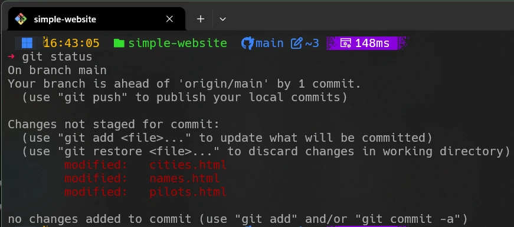
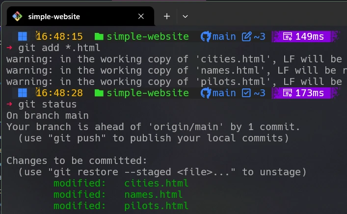
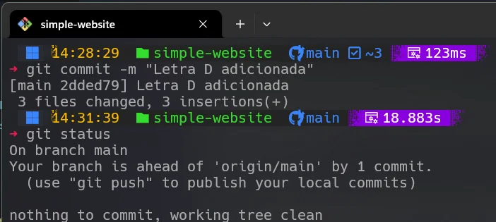

Durante a vida de um projeto de software é comum a necessidade de implementar novas funcionalidades. Estas funcionalidades são conhecidas como "feature requests" e são solicitadas pelos usuários do software. Para implementar uma "feature request" é necessário seguir um processo que envolve a criação de um novo 'branch' (ramo) para a implementação da funcionalidade e a integração da funcionalidade no 'branch' principal do projeto.
Nesta página vamos implementar uma "feature request" no projeto de exemplo. Seguindo o projeto "simple-website" vamos implementar uma alteração demandada pelo usuário para adicionar a letra 'D' ao "Phonectic Website". Para realizar esta ação vamos proceder da seguinte forma.
Para realizar a tarefa devemos modificar os três arquivos HTML localizados no diretório de trabalho do projeto usamos para esta tarefa o Notepad++ para editar os arquivos HTML. Que assim podem ser mostrados antes e depois das alterações realizadas:
As imagens acima refletem as alterações realizadas no arquivo pilots.html do projeto.
As imagens acima refletem as alterações realizadas no arquivo ciites.html do projeto.
As imagens acima refletem as alterações realizadas no arquivo names.html do projeto.
Queremos agora adicionar as alterações realizadas ao repositório Git. É importante observar que já realizamos anteriormente um commit por ocasião da adição dos arquivos HTML ao repositório.
Por que o Git usa duas fases - 'stage' e 'commit' para atualizar o repositório? Quando se faz o 'stage' o Git agrupa todas as mudanças que podem ser colocadas em um só 'commit' dando a isto um sentido significativo. O 'commit' é a ação de gravar as mudanças no repositório.
Agora temos uma imagem de como o git percebeu as alterações realizadas nos arquivos HTML do projeto.
A imagem mostra claramente que os três arquivos HTML foram modificados. O Git percebeu as alterações e está pronto para adicionar as mudanças ao repositório. Evidencia claramente que nenhuma mudança foi adicionada para comit.
Para adicionar as mudanças ao repositório usamos o comando 'git add' seguido do nome do arquivo. Para adicionar todos os arquivos modificados ao repositório usamos o comando 'git add .' O comando 'git add .' adiciona todos os arquivos modificados ao repositório.
A imagem abaixo mostra o comite realizado após a adição dos arquivos HTML acrescidos da letra D ao repositório bem como o comando git status mostrando que o repositório local está a frente do repositório remoto.
Pelas últimas ações o projeto do site fonético está evoluindo. Depois de criar o site no GitHub em um repositório local via clone, foram adicionados os arquivos HTML e o folder 'style' e agora por último implementado o "feature request" com a inclusão da letra 'D' nos arquivos HTML.
Voce pode verificar a história dos comites no projeto usando o comando:
git log
A imagem acima mostra cada comite associado ao seu longo hash como identificador único do git
bem como o autor e data de realização do comite. Nota-se tambem que as mensagens que compuseram cadas um dos comites são apresentadas pelo git log. O comite mais recente é mostrado no topo da lista. Pode-se usar tambem outros comandos do tipo git log --oneline --decorate para mostrar a lista de comites de
forma mais resumida conforme a imagem abaixo.
Observa-se na imagem anterior que o hash de cada comite é um conjunto de 7 caracteres alfanuméricos extraido do início do longo hash.
O Git Graph abaixo está sendo construído a partir de cada comite efetivado, considerando o ramo (branch) 'main' no qual estamos trabalhando.
Diagrama Mermaid para o Git graph
Código Mermaid para o Git graph
%%{init: { 'logLevel': 'debug', 'theme': 'base', 'gitGraph': {'showBranches': true, 'showCommitLabel':true,'mainBranchOrder': 0}} }%%
gitGraph
commit id: "0-109f780"
commit id: "1-d298f74"
commit id: "2-2dded79"